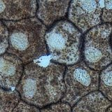
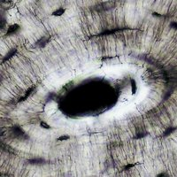

Echte preparatenEchte foto's van 23 weefselsepitheel, bot, bloed, kraakbeen, spier · 40–400×Open → Geanimeerde preparatenUienvlies, wangcellen, waterpestde opdracht bij de film Alles is cel✓ hierTwee microscopen: eerst drie getekende preparaten bij de film Alles is cel, daarna echte foto's van 23 weefsels. Stel scherp, vergroot en zoek de onderdelen. Sleep om het preparaat te verschuiven, tik om iets aan te wijzen.
Zeg wat je ziet met de vergroting erbij, bijvoorbeeld: "Bij 400× zie ik in elke cel een celkern."